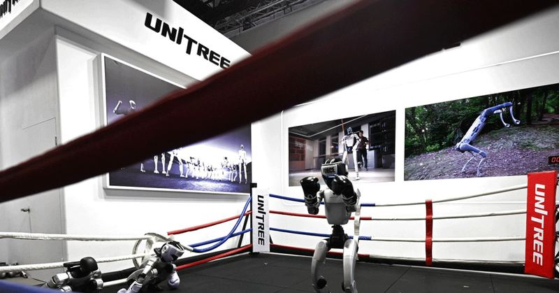

⚡Robot hình người 15.000 USD: Cuộc đua 5.000 tỷ USD định hình thế giới tương lai
Điểm nóng mới trong cuộc đua Mỹ - Trung Cuộc cạnh tranh giữa Mỹ và Trung Quốc đã vượt xa cuộc chiến thương mại hay thuế quan. Sau chip bán dẫn, thiết bị viễn thông, drone và xe điện, robot hình người ( humanoid robot ) đ